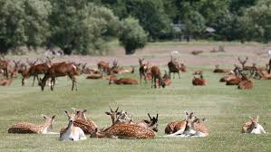

ScreenFreeSummers
ScreenFreeSummers
Best Free Parks & Nature Activities in London This Summer
Published July 2025
London’s green spaces are packed with family-friendly adventures that don’t cost a thing. From wildlife trails to nature roadshows, here are standout parks offering hands-on summer fun — all for free.
Greenwich Park
This iconic park is more than just views — explore the brand-new natural play area, meet the recently returned deer herd, and let kids roam the wildflower meadows. Great for a family picnic or bug hunt!
Royal Parks Nature Roadshows
From July to August, drop into free themed nature days across Regent’s Park, Greenwich Park, Kensington Gardens, and Bushy Park. Expect bug safaris, flower pressing, nature detective trails, and wildlife-themed crafts led by Royal Parks Learning teams.
Camley Street Natural Park
Near King’s Cross, this compact but wild nature reserve has ponds, bird hides, and insect hotels. Kids can spot frogs, ducks, and butterflies while learning about urban habitats — it’s peaceful and educational.
Holland Park Ecology Centre
Holland Park runs free nature days and drop-in forest school-style activities. Check the RBKC council website for family sessions that include bug hunts, leaf crafts, and pond dipping.
Woodberry Wetlands
Operated by London Wildlife Trust, this hidden gem in Hackney offers reedbed boardwalks, bird-spotting stations, and open wildlife events for families. Entry is free, and staff often host free nature-themed activities during school holidays.
Why These Parks Stand Out
- Free entry and educational activities
- Hands-on discovery with nature rangers and themed trails
- Plenty of space to run, climb, and explore wild areas
Whether your child wants to chase butterflies, climb logs, or collect nature clues, London’s best free parks offer a full day’s adventure — without screens or spending.